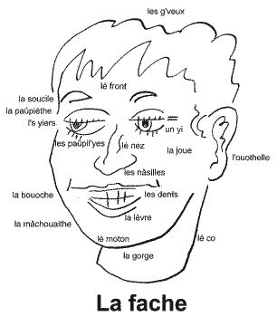

Trenton, Michigan, USA.
Lé 6 d'févri, 1982.
 Comme j'l'ai mentionné d'vant, nouot' admithabl'ye langue Jèrriaise est vrainment la pus expressive au monde. Prannez, par exempl'ye, lé mot "tête". Av'-ous janmais pensé au nombre d'expressions dans la vie d'touos les jours qué nou peut faithe sèrvi chu mot-là pour exprînmer tchiquechose tchi s'pâsse ordinnaithement? Par exempl'ye, quand un homme est en chèrge dé tchique travas, nou dit tch'il est "à la tête" dé l'entréprînse. Mais s'il en fait eune maie, d'l'entréprînse, nou dit "tch'i'n'y connaîssait ni tch... ni tête"!
Pour dithe qu' eune pèrsonne est întelligent, nou dit "il a des p'tits boudîns dans la tête", mais s'il est înnouothant ou un mio dêrangi, nou dit il a "la tête cratchie." S'il a ma à la tête, ou eune bourdonn'nie dans la tête, nou dit tch'il a "la tête comme eune cordonn'nie".
Quand un homme sé sent êtourdi, i' dit "la tête mé touânne" ou "la tête mé fend." Quand un homme est hardi embarrassé, nou dit tch'il a du travas "par dessus la tête." S'il a un problème tch'i' n'peut pon résoudre, nou dit tch'il est "à s'capuchi la tête contre les muthâles".
Quand eune pèrsonne est à heurler pour autcheune raîson tchelconque, nou dit tch'il est "à crier à tue-tête". Quand il a pèrdu ses g'veux, nou dit tch'il a "la tête nue." Pour un pouôrre dgiâbl'ye tch'est dév'nu fo, nou dit qu' "la tête lî touânnit".
Quand un homme est têteu ou contrariant, nou dit tch'i' veurt "aver sa tête" ou tch'il a "la tête duthe," ou tch'il a "eune tête tchi n'tcheint qu'a li." Eune aut' expression pour lé têtu est qué "chein tch'il a dans la tête, i' n'l'a pon ailleurs".
Si nou-s-a dans l'idée qu'eune pèrsonne n'est pon capabl'ye, nou dit: "Pour dé mé, jé n'lî donn'nais pon la tâche en veue, car la tête né lî tcheindrait pon". Pour un méchant ou un mauvais sujet, nou dit tch'il est "eune sale tête" ou "eune mauvaise tête." Pour un homme tch'est binnasse, nou dit tch'il a "eune tête d'âne." Quand plusieurs pèrsonnes sont d'accord entouôrre tchique idée, nou dit tch'il onl "la tête coulée dans l'même bonnet".
Pour un homme tch'a honte et la tête en bas ou, tch'est peûtheux, nou dit tch'il a "la tête comme eune autruche", mais n'en v'là ieune qué jé n'comprends pon, car pour dé mé eune autruche n'est pon peûtheuse. Eune fais j'visitis l'par national à Nairobi en Kenya, Afrique Orientale. J'tais en moto auve des anmîns tch'étaient à m'montrer l's annimaux sauvages dans l'par, quand, en faîsant un var pour vaie un rhînocéros dé pus près tch'était à paître, j'nouos trouvînmes soudainement fache à fache auve eune autruche tch'était à couer sus eune douzaine d'oeufs gros comme des cocannettes. J'arrêtînmes lé moto, sans doute, et l'autruche sé l'vit de'd'ssus ses oeufs et c'menchit à battre ses ailes d'eune manniéthe êpouvantabl'ye pour nouos faithe peux et protégi ses oeufs. Ou n'montrit pon autchun sîngne d'êt' peûtheuse, et j'tions bein d'êt' en moto car i' pathaît tch'i' peuvent vouos donner un raide pénibl'ye co-d'pid!
Mais pour èrvénîn ès expressions au sujet d'la tête. Pour les mêssieux tchi sont en chèrge dé la Législatuthe, des maîsons d'conmèrce ou affaithes dé la Couronne et d'la Cour Rouoyale, nou dit tch'i' sont des "grôsses têtes."
Quand un homme veurt tout faithe à san gré, nou dit tch'i' veurt "faithe à sa tête." Et s'i' n'est pon trop avîsé, ou manque d'întelligence ordinnaithe, nou dit tch'i. "pèrd sa tête." Quand eune pèrsonne învente tchiquechose, ou tch'i' peut faithe des cartchules sans papi ni crayon, nou dit tch'i' l'a fait "du sens d'sa tête." Quand un homme însiste dé faithe tout en bicouaine, nou dit tch'i' veurt "t'nîn tête" à tous. Et quand deux-s'trais pèrsonnes veulent distchuter tchiquechose entre ieux-mêmes sans êt' disteurbés, nou dit tch'i' sont à pâler "tête-à-tête." Quand nou-s-est seux d'san coup et qu' nou n'veurt pon dédar, nou dit tch'i' faut "aver eune tête sus ses êpaules."
Quand nou-s-est attrapés dans eune avèrse d'plyie sans grand' câsaque ni paraplyie et qu' nous-est mouoillis, nou dit qu nous-est "trempés d'la tête ès pids."
Jusqu'à ch't-heu j'n'ai qu' mentionné la tête des humains, mais les rotchièrs et falaîses lé tou d'nouos côtes en ont étout, des têtes, et il' ont toutes des noms. Mais i' n'y'a qu'un Jèrriais d'ma connaîssance tchi peut les nommer en entchi - ch'est l'Docteu Fraînque Le Maistre, OBE.
Viyiz étout: